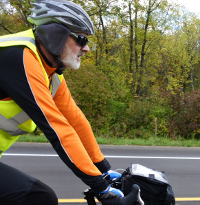

People
Kevin Middleton (he/him)
I am an Associate Professor in the MU Division of Biological Sciences. My interests include Bayesian inference, Functional morphology, Biomechanics, and Statistical teaching. I’m an active member of the informal DataPhiles discussion group.

Previously I was a faculty member in the Department of Pathology and Anatomical Sciences in the University of Missouri School of Medicine. From 2007-2012, I was in the Department of Biology at California State University, San Bernardino. Prior to that I was a postdoctoral researcher at Brown University and the University of California, Riverside. In deep time, I was an undergraduate at Wake Forest University and then a doctoral student in the Department of Ecology and Evolutionary Biology at Brown University.
If you want to read about bird foot evolution, here’s a link to my dissertation: Morphology, evolution, and function of the avian hallux.
I firmly believe in (a modified version of) Federico Ardila’s basic axioms:
Axiom 1. Quantitative biology potential is distributed equally among different groups, irrespective of geographic, demographic, and economic boundaries.
Axiom 2. Everyone can have joyful, meaningful, and empowering quantitative biology experiences.
Axiom 3. Quantitative biology is a powerful, malleable tool that can be shaped and used differently by various communities to serve their needs.
Axiom 4. Every student deserves to be treated with dignity and respect.
Graduate Researchers
Undergraduate Researchers
Gabi Ramirez
- Computer Science, MARC Fellow
- Deep learning applications for the study of craniofacial growth
Lab Alumni
Graduate Researchers
Sarah Peacock
- Effects of light on bone phenotypes, Modern human variation, Human craniofacial morphology, Forensic anthropology
- PhD University of Missouri, 2019
- Currently an Assistant Teaching Professor at Northeastern University
Amanda Smolinsky
- Skeletal evolution, Locomotor evolution in vertebrates, Effects of loading on bone phenotypes, Functional morphology
- PhD University of Missouri, 2018
- Currently an Assistant Teaching Professor at Rowan University School of Medicine
Brittney Coats
- Energy regulation, Inflammatory role of adipose tissue
- MS CSU San Bernardino 2012
- PhD University of Chicago
- Currently at ITW David Speer Academy, Chicago, IL
Lauren English
- Morphometrics of pterosaurs
- MS CSU San Bernardino 2012
- PhD University of Texas at Austin
- Currently a museum scientist at University of California, Riverside
Susan Lujan
- Effects of atmospheric oxygen on growth in alligators
- MS CSU San Bernardino 2012
Undergraduate Researchers
Adam Albright (2021-2023)
- Mechanisms of insect flight, Imaging and CT scanning, Genetics
- University of Missouri, 2023
Josh Fajardo (2020-2022)
- Locomotor biomechanics, machine learning, developing tools for studying mouse locomotion
- University of Missouri, 2022
Maddy LaChance (2020-2022)
- Cranial morphology in mice, Geometric morphometrics
- MU Cherng Summer Scholar
- University of Missouri, 2022
Kayla Robinson (2021-2022)
- MU DBS Honors Student
Alec Wilken (2016-2019)
- PhD University of Chicago, 2026
Caitlyn Smith (2016-2018)
- Currently a student in the University of Missouri School of Medicine
Kendra Lewis (2018)
- MU School of Medicine Summer Research Intern from Washington University in St. Louis
Rebecca Meyer (2016-2018)
- Currently in medical school at the Kentucky College of Medicine
Nick Bira (2014-2018)
- C3 Hughes Research Fellow
- Completed PhD at Oregon State University, 2022
Kyle Kirkland (2015)
- MU School of Medicine Summer Research Intern from Michigan State University
Michael Sojka (2014-2015)
- C3 Hughes Research Fellow, MU School of Journalism
Tarrin Casey, MD (2014)
- MD University of Missouri School of Medicine
Diana Salas (2013)
- MU School of Medicine Summer Research Intern from Indiana University